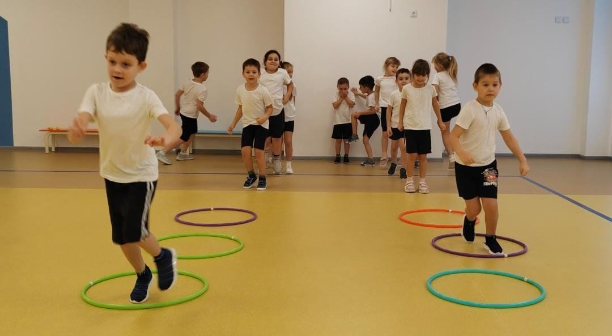
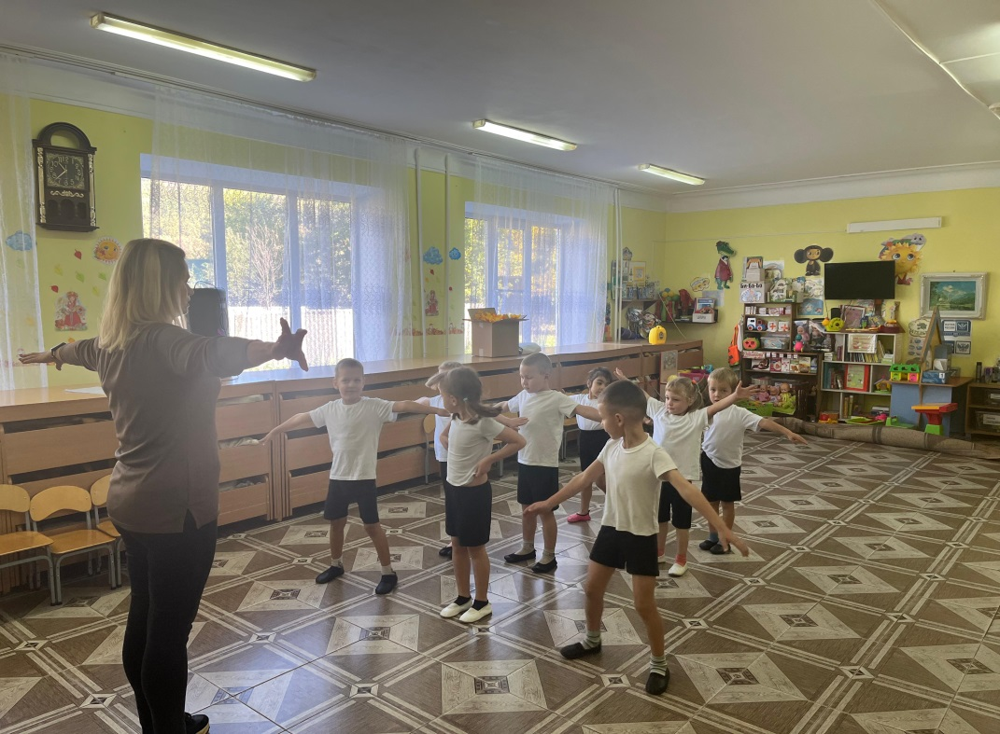

МБОУ ДО ДЮСШ «Олимп»
Наименование:
Крепыши
Место:
х.Красная Улька, ул. Октябрьская, д. 27
Педагог:
Воронова Екатерина Геннадьевна
Программа «Крепыши» представляет собой систему занятий физическими упражне-ниями, направленную на комплексное развитие всех физических качеств – выносливости, силы, ловкости, гибкости, скорости в их гармоничном сочетании. В процессе игры формируется развитие интереса к движению как жизненной потребности, чувства взаимовыручки и коллективизма, взаимо= выручки и ответствен-ности

Наименование:
Подвижные игры
Место:
п.Удобный, ул. Ленина, 16
п.Тульский, ул. Крупской, 31 а
Педагоги:
Шубина Наталья Юрьевна,
Егораева Елена Валентиновна
Программа «Подвижные игры» направлена на формирование, сохранение и укрепление здоровья обучающихся. Игры помогут восполнить недостаток движения, а также ориентироваться в конкретной обстановке и принять оптимальное решение. Помогая развить и укрепить основные группы мышц, что способствует улучшению здоровья, а также формирует целеустремлённость, настойчивость, быстроту реакции.
